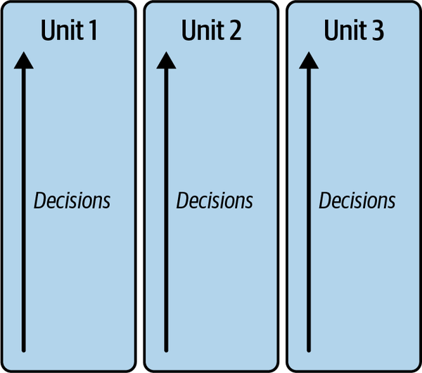
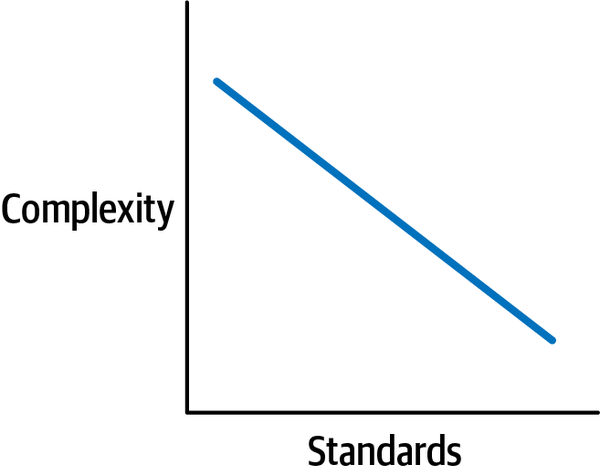
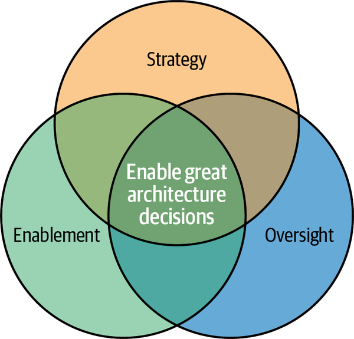
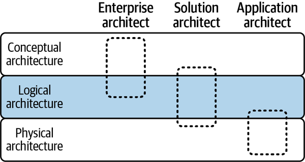
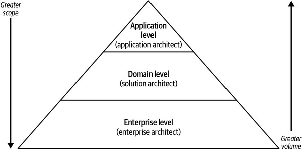
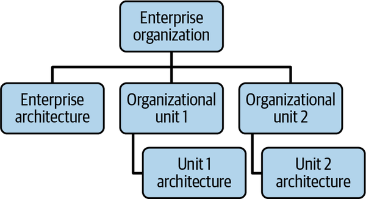
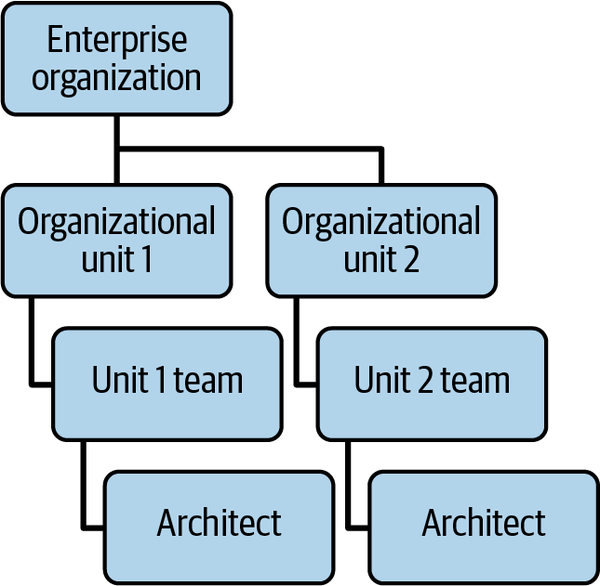
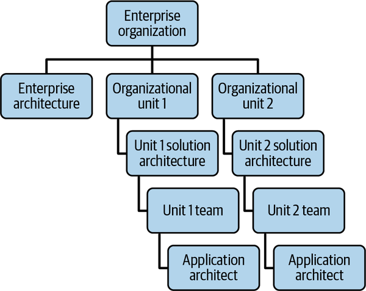

What does the word architecture mean to you? Perhaps it brings to mind visions of Renaissance art and Gothic cathedrals, or if you’ve ever done a home remodel, blueprints of houses and rooms. Perhaps you’re civically oriented and you start thinking about maps of cities and designs of buildings.
Whatever comes to mind, I have a strong hunch that design was part of it. So, we can then say that architecture definitely has something to do with designing something new. In the context of modern information technology (IT) organizations, the something is typically a software-based system.
How well does architecture help you and your organization deliver software? Perhaps you’ve had bad experiences with ineffective architecture, and the first words that come to mind are things like ivory tower, out of touch, or behind the times. Perhaps architecture seems like an archaic relic of the past, something that’s no longer needed in a modern organization as it attempts to keep pace with rapidly changing technology and business demands.
On the other hand, maybe you’ve had great experiences with architecture, and the first words that come to mind are things like clarity, strategy, and shared. Architecture may have provided the clarity needed to set forth a shared strategy with clear goals and blueprints to achieve them. Perhaps architecture allowed for great decisions that met business goals, kept customers happy, and also allowed for innovative technology, or maybe architecture provided the way to connect business to technology strategy.
This book aims to set you up for great experiences with architecture. Specifically, it aims to provide you with a path to successfully establish a strong enterprise architecture practice, where enterprise means across the entire company.
To do that, let’s first look at the value proposition of enterprise architecture. Why should you, or anyone in your organization, care to invest in enterprise architecture?
Enterprise architecture is critical to an organization’s ability to operate effectively with a clear technology strategy that fulfills business objectives. Where architecture as a general function solves problems, enterprise architecture solves complex problems that impact the enterprise and changes the enterprise as a whole. Where architecture in general seeks to deliver well-designed software, enterprise architecture provides the principles, standards, and best practices that enable all software engineering teams to deliver reusable, cost-effective, secure, scalable software that meets business needs.
It may be easier to understand the value proposition of enterprise architecture if I first talk about what happens to organizations that don’t have strong enterprise architecture.
Organizations without a strong enterprise architecture practice typically fall victim to the development of silos, chaos, and technical debt.
You may be in a siloed organization if Figure 1-1 looks familiar. In Figure 1-1, each organizational unit makes decisions independently of others. There are only vertical decisions, no horizontal decisions.

Organizational units race to meet their specific business objectives, each thinking that they have unique problems to solve. While they do deliver results in the form of software products, these results are optimized for each organizational unit rather than the enterprise as a whole. This means that the company ends up needing to maintain several similar yet slightly different solutions, and/or outright duplication of solutions, and/or solutions that are unable to effectively integrate with each other. This is both a waste of the company’s resources and an impediment to connected experiences.
You see, typically customers don’t want to know the complexity of all of the organizational units behind a product or service that they use; they want a seamless experience across them, and it takes an enterprise perspective to stitch that together. For example, suppose there is a company made of multiple business units. Both business unit A and business unit B need to reach customers with mobile devices. Business unit A decides to build a new mobile app. Since the company is siloed, so does business unit B. Each business unit accomplishes its specific goal of reaching customers via mobile apps. However, given that the units share a customer base, customers are quite perplexed about why the same company was offering two mobile apps with two experiences. Customer loyalty declines as customers decide to try out competition C, which has a much more integrated, seamless mobile app experience.
Siloed decisions made with myopic vision lead to shortsighted focus on tactics to resolve near-term fires, rather than strategic investment in the end game. An enterprise perspective allows for making decisions across silos.
The second symptom of a weak enterprise architecture practice is chaos. Chaos is a consequence of lacking a clear set of technology standards, as shown in Figure 1-2. Chaos in this context means that each software delivery team makes their own choices, and while there is some benefit in allowing for innovation and competition, there are often significant issues that occur in such an environment.

One issue is in impeding the ability to scale talent. You need to hire and train talent that understands how to use the various technologies that the teams decided to build with, whether that’s a mainstream industry-leading contender or an esoteric niche product. It can also be difficult to build fungible skill sets and engage in team mobility. This is because teams that use different technology choices cannot easily transfer their knowledge of one technology to another. It can also make it difficult to attract new talent, if there isn’t enough new modern technology in use.
Another issue is with sustaining and scaling cybersecurity and governance support and oversight. For each technology in use, typically there are requirements around securing it, and that can be technology specific. For example, the ability to scan software for cybersecurity vulnerabilities: for every software language in use, that’s one more capability needed. There is a cost to maintaining cybersecurity and governance oversight and assurance for each technology choice.
A third issue is in inhibiting operational gains or reducing an organization’s agility in terms of adapting and interoperating technology. When standards are introduced after disparate technology is already in use, organizations often have a tough time adapting and adhering to those standards, and in many cases have to invest in refactoring and rearchitecting their software applications.
As an example, imagine a company that falls in love with DevOps. Enamored with the idea of automated continuous integration (CI) and continuous delivery (CD), each of the company’s 5,000 teams decides to invest in its own DevOps solutions. Six months later, the company has not one, not two, not even a hundred CI/CD pipelines, but at least one pipeline per team. Five thousand teams had to design, develop, debug, troubleshoot, and maintain 5,000 pipelines. Each team had to go through the learning and change curve to manage its own pipeline, from start to finish. The company retroactively declares a standard to centralize the pipeline instead. Adding standards after 5,000 slight deviations had already been made proves to be quite painful.
Proactive standards accelerate development efforts. Reactive or no standards cause chaos.
The third symptom of an ineffective enterprise architecture practice is burgeoning technical debt that stifles true innovation and inhibits business agility. While, generally speaking, architecture decisions require the acceptance of trade-offs and risks, technical debt refers to the cost to remediate or refactor technical issues in the future that are caused by shortsighted decisions. Without clear architecture principles and decisioning practices or criteria, architecture decisions are at risk of being made only to fulfill an immediate need. Applications are then bogged down with technical debt that inhibits them from adapting to changing technology and/or evolving business needs.
A classic example of technical debt is in cloud migrations. Let’s say a company decides to migrate their applications to the cloud. Their applications were originally designed for data centers, not for the cloud. As a result, they do not horizontally scale, and they do not use technology that has parity with managed services in the cloud. They may even hardcode IP addresses. The company is under a tight timeline, though, so it decides to lift and shift its applications rather than refactoring or rearchitecting them. Lift and shift refers to migrating an application as is, without changes. Since the applications are not optimized to operate in the cloud, costs increase and they are still unable to scale to peak demands. The company is surprised when its newly cloud-hosted applications can’t actually reap the rewards of the cloud.
If you have to live with technical debt, understand the implications of it. Better yet, don’t introduce technical debt.
Just as you wouldn’t build a house without a blueprint, you wouldn’t want to stake your company’s technology future on whims, without a technology strategy. An effective enterprise architecture practice enables the definition of that technology strategy, at every level of the enterprise organization, to deliver the right, unique solutions. It creates shared vision across all impacted stakeholders, across business, technology, product, engineering, cybersecurity, and so on. When everyone has the same objective and marches toward that objective together, it becomes easy to reconcile priorities and deliver effectively. Products are delivered for the common good of the company, and here’s the key business benefit: delivery is better, faster, and cheaper since people are working together in an optimal way.
Effective enterprise architecture defines standards that provide guardrails for safe, secure, and scalable innovation. When standards are defined proactively, and teams understand what needs to be true, it becomes easy to deliver against these standards and enable reuse of common solutions. Instead of solving the same problem many times over, teams can adhere to standards to accelerate their development. From a business perspective, this is critical because it enables agility and prevents duplicative cost.
It results in modern applications that are future-proofed. Technology advances at a blistering pace, and applications that are constrained with yesterday’s technology can drag down an organization’s ability to innovate and excel with tomorrow’s technology. This allows for competitive advantage—key to any business.
Now that you see why we pursue enterprise architecture, let’s dive into what enterprise architecture means.
Let’s first differentiate between practice and roles. The practice of enterprise architecture refers to enabling both the ability to solve complex enterprise-wide problems and the ability to deliver reusable, cost-effective, secure, scalable software that meets business needs. The roles are elaborated in a later section and refer to the people who perform the practice of architecture.
To understand what the practice of enterprise architecture is, or rather, what it should be, let me take you through its vision and mission.
A vision statement typically declares what you want to achieve in the future. To put it simply, enterprise architecture defines the north star for an organization. The north star is the strategic direction that guides all technology investment in a way that connects business to technology. Creating a shared destination state across business, technology, and architecture for a given set of capabilities and the technology solutions that provide them consistently is the ultimate goal of enterprise architecture.
Knowing that ultimately we want to define that north star throughout the enterprise organization, here’s an example vision statement for an effective enterprise architecture practice:
Define technology strategy that transcends organizational differences to connect different aims into common business goals.
If a vision is what you want to achieve, then how do you go about achieving it? Enter the mission statement.
A mission statement typically declares how a vision is to be achieved. To achieve the vision above, where enterprise architecture as a practice can effectively output a clear north star that aligns stakeholders across the company, it is necessary to establish a foundation of trust-based decision making. It is through great architecture decisions that organizations decide on their business and technology strategy, break through siloed decision making to find commonalities, and do what is right not for any given team or organizational unit, but for the company itself.
Here’s an example mission statement for an effective enterprise architecture practice:
Enable great architecture decisions to deliver great solutions as one team.
Word choice in a mission statement matters, and different words may resonate differently in your organization. For this example mission statement, I want to emphasize a few key word choices:
Provide the ability to make architecture decisions—not actually make all of the architecture decisions.
Great meaning sustainable, solves the problem, and meets business needs, yet not necessarily perfect because architecture decisions require identifying, understanding, and accepting trade-offs.
An objective enterprise perspective is unique to enterprise architecture and is what enables enterprise architecture as a function to bring teams together across silos to accomplish common aims.
Later chapters do a deep dive on why these things are key. For now, let’s look at the functions of enterprise architecture.
To establish the practice of enterprise architecture, it is necessary to have some sort of an enterprise architecture organization. The exact nature of this organization can vary company to company but should at minimum include the functions illustrated in Figure 1-3, as these allow for executing the mission and achieving the vision.

Let’s start by expanding on the enterprise architecture strategy function.
Strategy in general refers to planning or directing actions to achieve a major business goal. Enterprise architecture strategy applies this concept to providing the guidance and direction necessary to achieve the goals of an effective enterprise architecture practice. It does so by defining all of the strategies, standards, policies, principles, and processes necessary to operationalize and perform architecture across the company.
This function requires senior technology leaders who are experts in technology, deeply understand business needs, and are capable of influencing alignment at senior levels across the enterprise organization. In short, enterprise architecture strategy defines what to do for an effective enterprise architecture practice.
Knowing what to do is but the first step. Next, you need to know how to do it! That brings us to the enterprise architecture enablement function.
The standards and processes that are defined by the enterprise architecture strategy function need to be operationalized for usage by architecture roles (defined in a later section). To operationalize effectively, an enterprise architecture enablement function should be established to provide tools and training, independent albeit integrated with the enterprise’s software delivery tools and training. The reason for independence here is because the customers of these tools and training cater to different personas (as described in the following roles section) and different needs. The reason for integration is because there is overlap in how these tools and training are used to deliver software. See Chapter 4 about embedded and accessible architecture for elaboration on this reasoning.
This enterprise architecture enablement function requires product and engineering talent to deliver tooling, and learning and development talent to deliver training. It must be both customer and results focused to deliver effective tooling and training. As sophisticated and successful as enterprise architecture enablement can be to enable the architecture practice, it’s still necessary to provide assurance and verification that the architecture practice as implemented actually met the requirements and goals defined by the enterprise architecture strategy function. This assurance and verification is the purview of the next function, the enterprise architecture oversight function.
The standards and processes that are defined by the enterprise architecture strategy function also need to be enforced to ensure that they are adequately followed, and that opportunities for improvement can be identified and implemented. While the details of technical enforcement may vary, from a functional perspective, the enterprise architecture oversight function retains accountability for the effectiveness of all of its standards, policies, procedures, processes, and controls. A control refers to a process or technical policy that provides assurance that a requirement is met in a compliant manner.
This oversight carries three parts:
Architecture governance ensures that processes and oversight are in place to align with architecture standards.
Architecture risk identifies, mitigates, and manages all risks associated with practicing architecture in accordance with the architecture standards.
Architecture compliance manages and monitors all activities and controls necessary to adhere to architecture requirements as defined in architecture standards.
The degree, complexity, and human labor needed to perform oversight depends greatly on an organization’s maturity and automation levels for defining, implementing, and monitoring controls. Controls can be centrally executed or federated down to an organizational unit or even a team. It is up to the enterprise architecture oversight function to work in partnership across the enterprise organization’s risk and audit functions to ensure a highly performant and efficient suite of effective architecture controls. It is also necessary for the enterprise architecture oversight function to work hand in hand with the enterprise architecture enablement function as directed by the enterprise architecture strategy function to rightsize the rigor of the oversight with the need for engineering teams to deliver software solutions better, faster, and cheaper.
By now, you may be wondering “What about the enterprise architects themselves? Aren’t they part of the enterprise architecture organization? And what about design? You said architecture was about design!” And so it is. The functions of enterprise architecture enable architecture roles to do what they do best: make good design decisions that clarify the target state. Enterprise architect is a role, and the placement of enterprise architects in an organizational structure is a key decision that has to be made. So, let’s now look into typical architecture roles.
In the IT industry there are a wide variety of architecture roles. In practice, I have found that the minimum set of roles discussed in the following subsections work well. The enterprise architecture strategy function should partner with senior leaders to define and tailor the architecture roles that are needed at an organization.
The first role that I’ll mention is the enterprise architect role.
The enterprise architect role is focused on strategic enterprise-impactful decisions such as technology standards and architecture patterns that are directly tied to business outcomes. This is typically a senior-level person who has strong communication, influence, and impact skills, and a broad understanding across several areas.
Successful enterprise architects are technology leaders who are also strategic thinkers who operate at the enterprise level. This combination is hard to find, because you need both someone who can lead and influence change, where that change can span across technology, process, and culture, and someone who has the technical expertise and strategic ability to figure out what the change is supposed to be, when looking at a strategic time horizon three to five years out. They can define that strategy as well as the tactics and trade-offs necessary to achieve it, and they can communicate that vision in simple terms.
Also, successful enterprise architects are able to provide an objective, holistic perspective into decision making, such that they deeply understand the needs of the overall corporation’s business and how technology can be used to satisfy it across the entire enterprise. They can solve problems that transcend domains or divisions. They can establish trust based on technical credibility and communication skills, and use that to influence both business and technology leaders, typically at an executive level, to align on making a change.
Enterprise architects solve problems such as:
How do we converge identity solutions across the enterprise?
What should our modernization strategy be?
What should our approved software languages technology standard be?
Next, let’s look at the solution architect role.
The solution architect role brings both a business and technology focus, in that they marry capabilities to technology solutions while evolving both toward business outcomes. This is typically a senior-level person with strong communication, influence, and impact skills and a deep understanding in a particular subject. Often, subjects are represented as architectural domains, which are groups of capabilities that are provided by solutions in support of business processes. Check out Chapter 8 for more elaboration on domains.
Successful solution architects straddle both business and technology. They understand business objectives and business needs, and moreover what business capabilities are necessary to fulfill those needs. They may be adept in domain-driven design (DDD) to define logical boundaries and contexts to bring clarity and understanding to those capabilities. They also understand technology, and they know how to think through trade-offs and perform analysis of alternatives to recommend technology usage to provide a given capability. They are well versed with architecture principles and standards to inform architecture decisions. They collaborate well with others, both business and technology leaders. They can mine solutions to identify new patterns. They become experts for a given domain, knowing both the business and technology of that domain inside out.
Solution architects solve problems such as:
Would this capability be better serviced by a product, a platform, or a service?
Where do we need to invest in new capabilities or deprecate existing capabilities?
How should solutions integrate to support a new business use case?
Now, let’s look at the application architect role.
The application architect role is focused on technology with an understanding of business. Application architects provide technical expertise to design systems, applications, and platforms. The level of this person ranges depending on the complexity and criticality of the application or system that they are supporting. A mission-critical system should have a more senior-level application architect, whereas a noncritical system can have a more junior-level application architect. These architects typically have strong problem-solving and technical backgrounds, with a deep understanding of patterns and analysis.
It is worth noting that there is currently an industry trend to merge this role with that of a tech lead or senior engineer on an engineering team. This tech lead or senior engineer essentially expands responsibilities to cover application architecture scope in addition to their responsibilities around executing the engineering delivery for their software product.
A successful application architect is an expert with the technologies used by the engineering delivery team. They are also able to understand architecture standards and patterns and how to apply them or adapt them to a particular application. They view themselves as part of the engineering team, and work with them throughout the design and delivery process, rather than being a hands-off consultant.
Application architects solve problems such as:
How can this application be highly available to provide four nines (99.99%)?
Should this application use a microservices architecture or not?
What is the best method of integration between this application and another?
Where does this application have a critical dependency on another, and how can that dependency be mitigated?
Now that you’ve learned about the three typical roles, let’s look at how they compare and contrast.
To better understand how these roles are differentiated and where they overlap, let’s take a look at a few key characteristics and how they compare. The first characteristic is described in Figure 1-4 to show the type of architecture that the architect role concentrates on delivering. Conceptual architecture refers to the most abstract level of architecture, where concepts and business capabilities are used to describe an architecture solution. Logical architecture is primarily concerned with the functional units and boundaries of solutions. Physical architecture focuses on the technical implementation details of an architecture solution.

The next characteristics are described in Figure 1-5 to illustrate the scope and volume of architecture decisions that these roles make. Scope means both the breadth of context that must be considered in making the decision as well as the impact of the changes caused by the decision. Volume refers to the amount and frequency of decision making. As shown in Figure 1-5, the enterprise architect role operates at the enterprise level to influence enterprise-impactful changes; these are infrequent in number compared with other types of architecture decisions. The solution architect role operates at a domain level; while some domains are themselves enterprise impactful, others are not. The application architect role operates at the most granular level of a given application or solution; some solutions are themselves enterprise impactful, others are not.

Thus, given the level of seniority and breadth needed for an enterprise architect, they tend to be the fewest in number in any given organization. Next in terms of numbers are solution architects, and then the greatest number is application architects. The exact number of each depends on an organization’s needs.
All of these architect roles have common traits, as follows:
The ability of an architect to establish trust with business and technology leader counterparts is paramount to their success in being able to influence decisions from inception through execution to realize tangible business outcomes.
The technical acumen of the architect is unquestionable. What is truly unique, though, is the ability to understand business needs and know how technology can be used in service of those.
As mentioned in the beginning, effective enterprise architecture solves complex problems. The architect roles are the performers of the functions of architecture to solve problems in objective, meaningful, lasting, and substantive ways.
Architects have to be able to influence outcomes, more so than with positional authority. As a result, they must be perceived as technology leaders and inspire others to drive an agenda of changes.
So far, I’ve discussed these roles generically. Next, let’s look at how to apply them in a specific context.
Enterprise architects, solution architects, and application architects may be required in a particular subject matter area to fulfill business needs. There are several specialized functions that can be coupled with each of these roles, and following is a nonexhaustive list:
Brings a deep understanding of cybersecurity and threat analysis to problem-solving. A security-focused enterprise architect may lead a data protection strategy. A security-focused solution architect may solve a domain-specific problem, such as endpoint protection. A security-focused application architect may use threat modeling techniques to define the security architecture of an application.
Brings a deep understanding of network design and constraints to problem-solving. A network-focused enterprise architect may define a zero trust strategy. A network-focused solution architect may solve a domain-specific problem, such as establishing routing patterns. A network-focused application architect may solve specific network problems, such as fixing virtual private networks.
Brings a deep understanding of cloud architecture and patterns to their problem-solving. A cloud-focused enterprise architect may define a multicloud strategy. A cloud-focused solution architect may solve a domain-specific problem, such as defining the cloud execution environment for all applications. A cloud-focused application architect may use cloud architecture frameworks to design a highly available cloud native application.
Brings a deep understanding of operational automation to enable teams to swiftly recover from incidents. A site reliability–focused enterprise architect may define an observability strategy. A site reliability–focused solution architect may define standard tooling to use for monitoring, alerting, and logging. A site reliability–focused application architect may understand business needs to define service-level objectives (SLOs) and service-level indicators (SLIs) for a specific application.
Brings a deep understanding of data structures, data modeling, and data management, as well as knowledge of different types of databases to their problem-solving. A data-focused enterprise architect may define data management standards. A data-focused solution architect may define a domain-specific problem, such as establishing a data lake or lakehouse. A data-focused application architect may define the right data stores and data replication strategy to meet the business needs of eventual consistency for a specific application.
Additionally, there are specific instantiations of the enterprise architect roles:
This is the head of enterprise architecture, with approval authority to make enterprise architecture decisions. This is usually a senior-level executive who reports to the CIO or CTO.
This is the head of an organizational unit’s architecture team. They are accountable for all the architects consistently delivering high-quality architecture decisions in their organizational unit. They are also responsible for approving divisional decisions, escalating enterprise-impactful divisional decisions for enterprise review, and providing input into enterprise architecture decisions from a divisional impact, feasibility, and adoption perspective.
Now that we’ve reviewed what the typical architect roles are, let’s take a look at how they can be operationalized in your organization.
Organizational design needs to be carefully considered to meet the needs and abide by the culture, engagement model, size, and complexity of an organization. Let’s look at the most common models that are implemented for architecture organizations, starting with centralized.
Centralized architecture refers to an organizational design in which there is a team of architects, typically fully dedicated in their role, that is consolidated or central to the organization, and/or to an organization unit. This consolidated team concentrates decision-making powers. Figure 1-6 illustrates this concept further to show architecture teams centralized at the enterprise level, and at the divisional or organizational unit levels. These central teams support their particular layer; meaning the enterprise architecture team supports the enterprise, and the organizational unit’s architecture team supports that organizational unit.

As with any architecture decision, there are trade-offs to consider. Pros of a centralized architecture organizational design include the following:
Preserves objective viewpoints necessary to advise decisions that weigh the common good more highly than individual benefit. This objectivity is retained because the centralized architect is independent and therefore neutral from the chain of command of the delivery team.
Facilitates efficient, consistent decision making against a clear vision, because the centralized team shares the same vision and can easily collaborate with one another to ensure consistency.
Fosters more efficient collaboration across business units and stakeholder groups and overcomes siloed decision making by design. A centralized team is in an optimized position to collaborate with other centralized teams.
On the other hand, here are some cons of a centralized architecture organizational design:
Further from the customer/business, therefore architects need extra effort to be perceived as valued partners of the engineering teams that they are guiding rather than bottlenecks that cause delays in delivering work.
Not as scalable in terms of number of people since typically the centralized team follows a matrixed support model.
The opposite of centralized architecture is federated or decentralized architecture.
Federated architecture refers to an organizational design in which the architect role is completely decentralized and embedded into the delivery teams, typically as part-time in their role. The teams themselves are empowered to make the architecture decisions. Figure 1-7 illustrates this concept further, where the architect roles are embedded into the teams themselves and there is no central architecture team at either the organizational unit or enterprise level.

The following are pros of the federated architecture organization design:
Able to scale in terms of decision making since there are more teams with more people to scale with.
Ability to upskill teams to empower them to make decisions since the decision-making power rests with the team themselves.
Whereas the cons of the federated architecture organization design include the following:
Can lose objectivity due to being motivated to decide in the team’s favor based on incentivization structure, rather than the greater good.
Can be detrimental for performance management unless architecture outcomes are well understood to be adding tangible business value, since the architect’s deliverables are different and not as easily measurable as the engineer’s.
Can duplicate efforts and be more prone to siloed decision making, since each team is deciding independently of one another.
In practice, though, neither centralized nor federated organizational designs are the full answer when it comes to the question of what works best for an effective enterprise architecture practice. Usually, what works best is the combination of both—hybrid architecture.
Hybrid architecture refers to an organizational design where some architect roles are centralized, and some architect roles are federated. Figure 1-8 illustrates this concept.
Hybrid is usually the model that works the best in a given organization, though again, the organization’s size and scale, specific business needs and strategy, and company culture need to be weighed in the decision of organizational design. The enterprise architecture organization that provides the functions of enterprise architecture strategy, enablement, and oversight is typically centralized. The solution architecture organization may be centralized, federated, or both depending on the company. For example, one implementation could be to centralize the enterprise solution architects and federate the domain or divisional-specific solution architects. Another could be to federate all of the solution architects but centralize at the divisional level. The application architect is the most decentralized, usually being federated into the delivery teams. The risk of siloed decision making at the application architect level is mitigated by the presence of strong standards and processes defined by the centralized enterprise architecture organization to yield consistent quality of decisions.

For an architect to be successful in any organizational model, they require a strong partnership with the following roles:
At senior levels, this would be an accountable executive. This is the role that has approval authority to align technology development with architecture decisions.
At senior levels, this would be an accountable executive. This is the role that has approval authority to align business goals with architecture decisions.
At senior levels, this would be an accountable executive. This is the role that has approval authority to align product priority and roadmaps with architecture decisions.
It is essential that these three roles agree that they, too, are part of the architecture process and work hand in hand with their counterpart architecture role to define and deliver the shared destination state. Without this partnership, an architecture deliverable is nothing more than a piece of paper. It is this partnership among business, technology, product, and architecture that takes the ideas and decisions documented on that piece of paper into reality.
Speaking of deliverables, let’s now take a look at a few essential ones.
While there is a wide variety of standard architecture deliverables, and a number of different standards that can guide their creation, this section outlines what I’ve found to work well in practice. The enterprise architecture strategy function is accountable to create the templates, principles, and standards that guide the formation of these deliverables. I recommend taking a look at industry frameworks like The Open Group Architecture Framework (TOGAF) and the C4 (Context, Containers, Components, and Code) model to reuse industry best practices.
Let’s start with the architecture decision deliverable.
Architecture decisions document a recommendation; the context, goals, and constraints to inform that recommendation; the analysis of alternatives conducted to make the decision; and who made the decision and when.
This deliverable provides a documented rationale for why a decision was made that can be reviewed for posterity and inform future decisions to avoid rework. It serves as a mechanism for collaboration among all stakeholders that are impacted by a decision to help create alignment on that decision. This deliverable supports governance processes where decisions must be documented to record the rationale for deviation from a standard.
Architecture decisions are so essential to every architecture role that we’ll deep dive on them in just a little while. But first, let’s turn our attention to another common deliverable, the architecture pattern.
Architecture patterns document a solution to a problem and typically come in two forms: design, which is technology agnostic, and implementation recommendation, which is technology specific. They include documentation of issues and considerations for using the pattern.
This deliverable provides a reusable blueprint to follow to implement a solution. It defines best practices that provide a standard way to do something. To define best practices, it must be proven through implementation and not just theoretical.
Ideally, an architecture pattern can be codified in a form that makes it reusable. For instance, a reference architecture may be created as a documented blueprint to provide an example of how several patterns can be used together to design a particular type of application solution. This reference architecture can then be codified as a reference implementation that is running software that implements the reference architecture. Another example is patterns as code, where software templates, snippets, modules, and/or libraries are used to codify the pattern.
Architecture patterns are typically output by an enterprise architect role. Next, let’s look at a common deliverable for the solution architect role: the capability target architecture.
Capability target architectures document a shared destination state for a group of capabilities and the solutions that provide them. This group is often called an architecture domain, as elaborated in Chapter 8.
This deliverable includes analysis and documentation of solution architecture decisions at this domain level, such as what to invest in versus what to deprecate, where emerging technologies are needed, and where there is opportunity for convergence and consolidation. It is a strategic document that provides a documented target state for how domains will evolve over time. It can include one or more views that illustrate the capability target, such as the following:
Domain broken down into logical units, mapped to the conceptual architecture.
Logical architecture mapped to the physical architecture of the solutions that provide the logical functions.
Views written in industry standards such as PlantUML to describe how logical or physical units interact with one another in a specific workflow.
Yes, this is the same deliverable mentioned above, but in this context, it refers to decisions made at the domain level.
Next, let’s look at a common deliverable for the application architect role: the application target architecture.
The application target architecture documents the description and various diagrams of an application, that at minimum includes the following:
This describes the logical breakdown of the application into functions and how they interact with one another.
This describes how the application will be deployed and the resilience and security characteristics therein.
The application target architecture includes analysis and documentation of architecture decisions at the application level. It provides documented design for the application’s target state, enabling decisions around changes from current to future state. It also provides visuals that are easy to understand to review the application’s architecture and determine any risks.
You may have noticed that architecture decisions were mentioned both as an output of the mission of enterprise architecture, and as a deliverable. As promised, let’s deep dive on them a bit.
An architecture decision is simply a decision that is created as a result of an architecture process. These decisions are made by an architecture role in partnership with technology, business, and product counterparts.
Although formats vary, through experience I have learned that the anatomy of an architecture decision record should include the following elements:
A unique naming convention is necessary to distinguish decisions.
A human-readable description of what problem the decision is solving is helpful to search for relevant decisions.
The taxonomy of metadata tags or labels can vary from organization to organization, but it is helpful to establish a consistent one up front to enable transparency, visibility, and searchability across an organization, both top to bottom and across.
Explicitly stating who is accountable, responsible, consulted, or informed by the decision is helpful to ensure that all relevant stakeholders were included in the decision making.
Knowing the status of the decision makes it clear whether it is in effect or not.
Knowing the date of the decision allows for refresh.
Explicitly documenting the problem that this decision solves avoids ambiguity.
This shows what options were considered for the decision, and the pros and cons, or trade-offs, of those options.
This describes why a certain option was selected. And if the decision changes over time, this provides the reasoning for that, too.
This describes the results of implementing the decision, and it should also highlight any technical debt and risk that is accrued.
Templates can differ depending on your desired format. Here is a simple format that I’ve found to work well:
Decision ID: Unique identifier for the decision record
Title: Brief title, used for search and filtering
Status: Status of decision record, such as draft, in progress, approved
Approval date: Date decision was approved
Approver: Role and name of accountable approver
Contributors: Roles and names of consulted stakeholders
Informed: Roles and names of informed stakeholders
Problem statement: Describe the problem that this decision addresses
Context: Provide background information, define assumptions and constraints, and identify factors considered in options analysis
For each factor considered in the option analysis, add a row to define associated pros and cons. For each solution option, add a column. You can also switch the table to have options listed horizontally and factors listed vertically, depending on your view preference.
| Factor | Option 1 (describe option 1) |
Option 2 (describe option 2) |
|---|---|---|
|
Factor 1 |
+ Pro – Con |
+ Pro – Con |
|
Factor N |
+ Pro – Con |
+ Pro – Con |
Recommendation: Describe the option chosen and the rationale for choosing it
Implications: Describe implications of the decision, including technical debt, trade-offs, and impacts
When you build a house, you expect it to be built upon a high-quality architecture that meets both regulations and your needs. Similarly, when you deliver technology, you need an effective enterprise architecture practice to lead the way and define the north star. This north star manifests as a cogent technology strategy that permeates every level of your organization. This north star is created by a series of shared, aligned, high-quality architecture decisions that lay the groundwork for the sustainable design and implementation of technology to meet business aims.
To yield optimized results, whether it be for an enterprise technology strategy, a particular set of capabilities, or a specific solution or application, having the right architecture standards, practices, and disciplines in place, along with the right talent in the right roles, is necessary. An effective enterprise architecture is what defines and manages those architecture practices in such a way as to overcome siloed decision making, chaos from technology sprawl, and technical debt from shortsighted decisions:
Effective enterprise architecture provides a clear vision for an organization to create and clarify a shared destination state, a clear mission to enable great architecture decisions, and powers the productivity of all architecture functions and roles.
Enterprise architecture functions span strategy, governance, risk, compliance, tooling, and training.
Enterprise architecture is what defines all the standards, processes, and tools necessary to perform architecture across an organization.
Architecture roles perform the practices of architecture, which include business-minded roles that make decisions across the enterprise (enterprise architect), an architectural domain (solution architect), or a particular solution (application architect).
A key decision for any organization is whether to centralize, federate, or do some combination thereof for architecture roles.
For architecture roles to be successful, it is essential to engage and partner with roles across technology, business, and product.
Architecture decisions and solutions are the key byproducts of an effective enterprise architecture practice.
Now that you’ve seen why enterprise architecture is necessary, what it is, and what it drives, in the next chapter we’ll turn our attention to how you can establish a strategy to actually implement a strong, effective enterprise architecture practice in your organization.